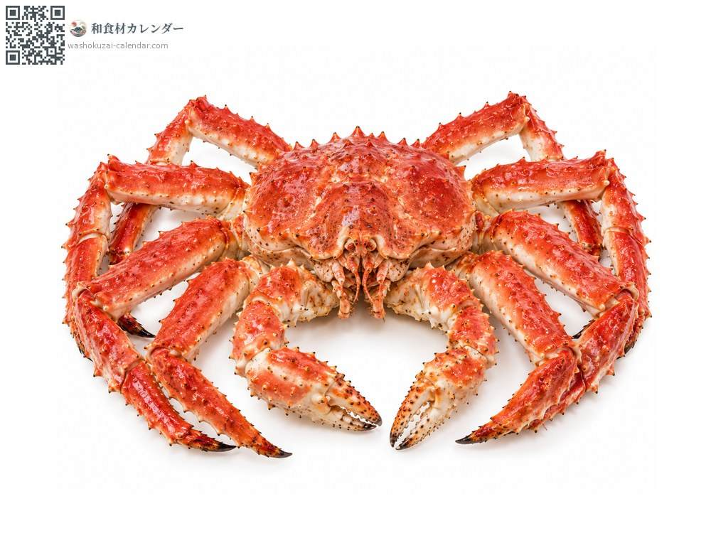
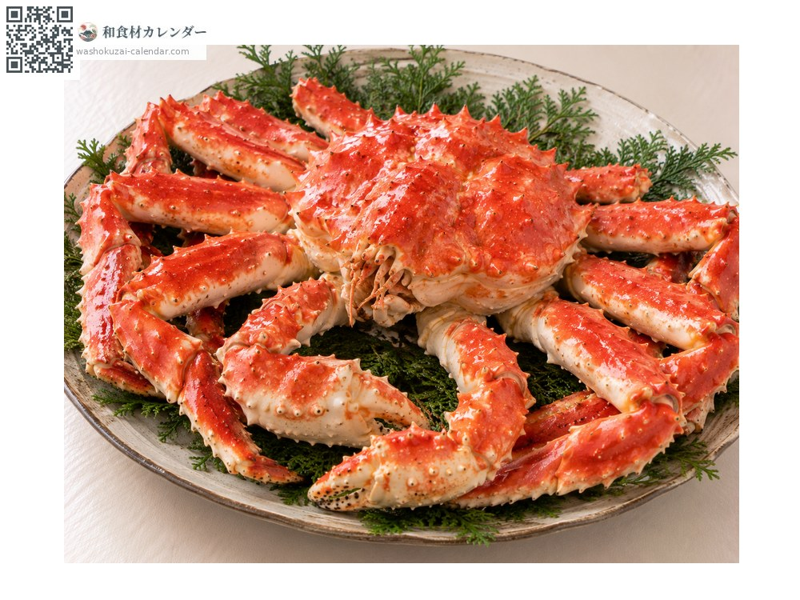
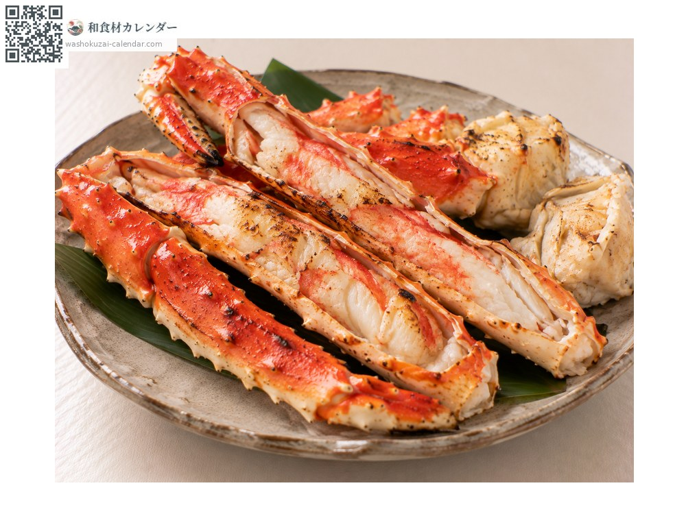
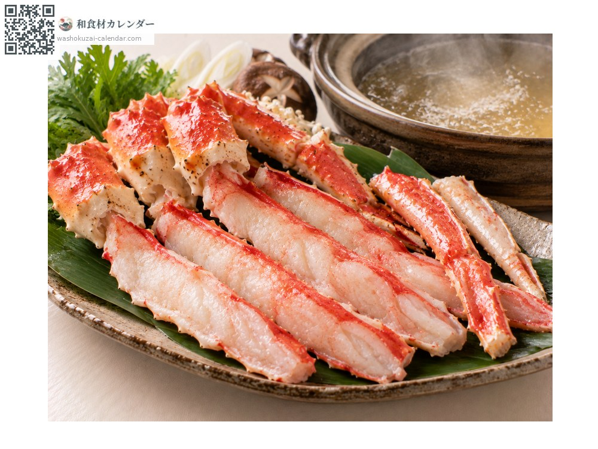
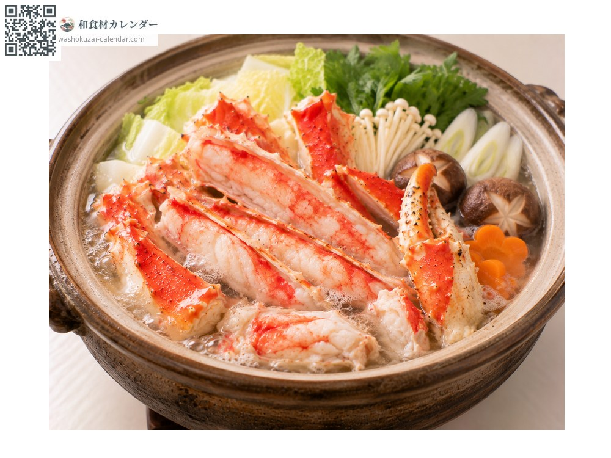

อาหารทะเล
ปูทาราบะ (ปูราชาแดง)
タラバガニ たらばがに tarabagani
ชื่ออื่นtarabagani
อร่อยที่สุดในเดือน ม.ค., ก.พ., พ.ย., ธ.ค.

ช่วงที่อร่อยที่สุด
ม.ค.
ก.พ.
มี.ค.
เม.ย.
พ.ค.
มิ.ย.
ก.ค.
ส.ค.
ก.ย.
ต.ค.
พ.ย.
ธ.ค.
ช่วงอร่อยที่สุดมีจำหน่าย
วิธีปรุง

ต้มเกลือ
ต้มน้ำเกลือแล้วกิน เนื้อในขาใหญ่เด้งแน่น

ย่าง
ย่างถ่านทั้งเปลือก กลิ่นหอมฟุ้ง

ชาบูชาบู
ลวกขาสดเร็ว ๆ ความหวานจะเด่นขึ้น

หม้อไฟ
เปลือกให้น้ำซุปเข้มข้น ปิดท้ายด้วยข้าวต้ม
วิธีเลือก
ยกแล้วรู้สึกหนัก กระดองแข็ง ขาครบ
วิธีเก็บรักษา
แบบต้มแล้วแช่เย็นได้ 2-3 วัน แบบสดต้องทำให้สุกภายในวันเดียวกัน แช่แข็งได้
แหล่งผลิตหลัก
เกร็ดน่ารู้
แม้ชื่อจะมีคำว่าปู แต่เป็นญาติกับปูเสฉวน มีขารวมแปดขา ไม่ใช่สิบขาอย่างปูแท้ ชื่อญี่ปุ่นมาจากการที่จับได้ในแหล่งจับปลาค็อด ปูอาบูระที่เป็นญาติใกล้ชิดหน้าตาคล้ายกันแต่คนละชนิด แยกได้จากจำนวนหนามบนกระดอง
วัตถุดิบที่อร่อยที่สุดในช่วงเดียวกัน
 ปลาซาบะ
ปลาซาบะ ปลาบุริ (ปลาหางเหลือง)
ปลาบุริ (ปลาหางเหลือง) ปลาทูน่าครีบน้ำเงิน
ปลาทูน่าครีบน้ำเงิน ปลากระโทง
ปลากระโทง ปลาเรนโกได (ปลาทรายแดงหลังเหลือง)
ปลาเรนโกได (ปลาทรายแดงหลังเหลือง) ปลาทรายแดงเส้นทอง
ปลาทรายแดงเส้นทอง ปลาทาคาโนฮาได (ปลาหางจุด)
ปลาทาคาโนฮาได (ปลาหางจุด) ปลากุเระ (ปลาเมจินะ)
ปลากุเระ (ปลาเมจินะ)